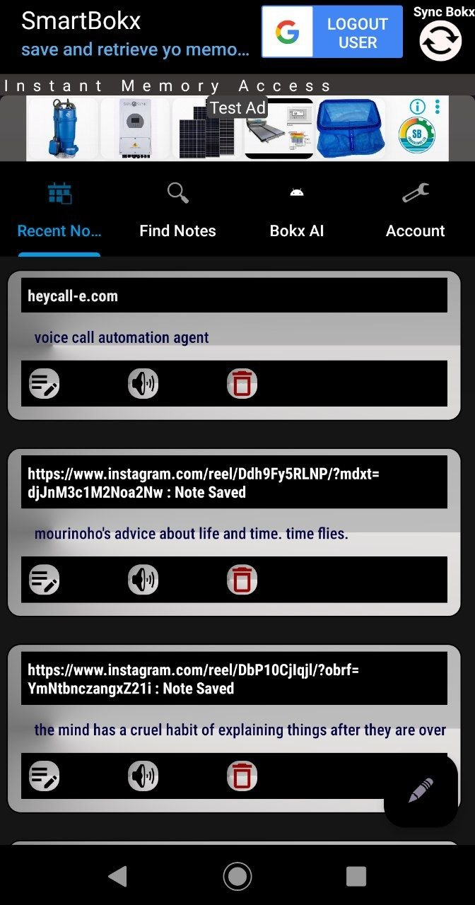
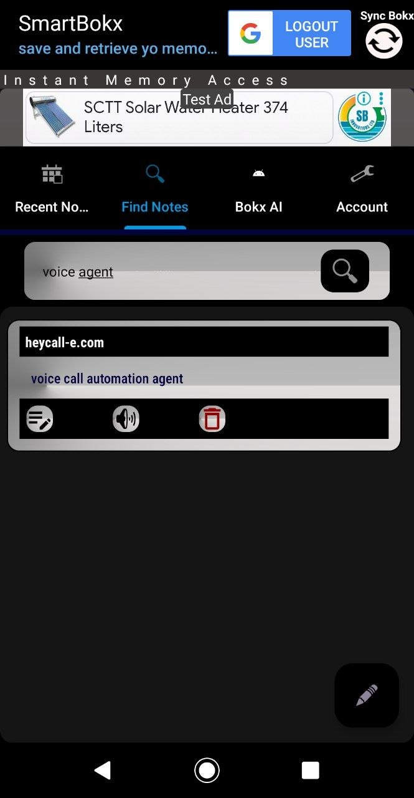
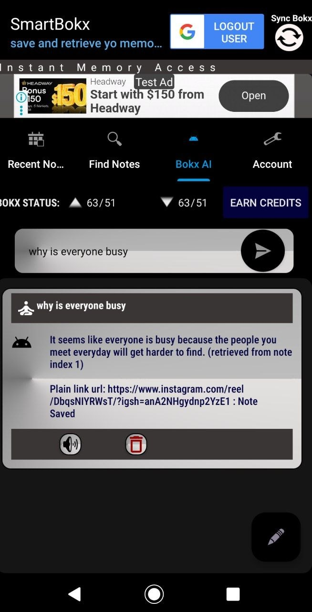

Build.
Break.
Rebuild.
I build software across the stack — from AI and Android applications to UDP protocols, binary analysis and low-level systems.
Explore projects ↓View GitHub ↗$ whoami aivan2798 $ philosophy dreamer // builder $ current_mode BUILDING... $ stack --list C++ · Kotlin · Python TypeScript · Java · Flutter $ ./keep_going.sh █
Things I've built.
Posteye
An expert.ai-based Facebook post analyzer built around NLP and social-content analysis.
View repository ↗Watch Demo Video ↗
Smart Bokx
AI-assisted notes and knowledge retrieval using Android, Supabase, embeddings, vector search and LLM workflows.
View app screens ↓Buuza
Chat with documents: paste text, ask questions and get answers using NLP and Spring Boot.
View repository ↗Zaun Remastered
An improved version of Zaun UDP with automatic network-parameter detection.
View repository ↗Zaun UDP
A sample protocol over UDP designed for fast transfer, minimal packet loss and fast lost-packet detection.
View repository ↗0xSpyda
A Binary Spyder for exploring the binary matrix of a target core using Frida or Diehard binary tools.
View repository ↗Notes, with a little more intelligence.
A closer look at Smart Bokx: a place to keep useful notes, find them again, and ask Bokx AI for context.



Built from many layers.
C/C++ · Kotlin · Java · Python · TypeScript · JavaScript · Rust · Go · x86 Assembly
Android · Jetpack Compose · Flutter · React Native · Spring Boot · FastAPI · Django
NLP · LLM APIs · RAG · embeddings · vector databases · semantic search
UDP · networking · JNI/NDK · Win32 · binary analysis · reverse engineering
“I AM A DREAMER,
NOTHING CAN BREAK MY SPIRIT.”
Open source, experiments, unfinished ideas and things worth breaking apart to understand.
Open profile ↗